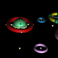
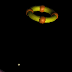

MicWorld. version beta 0.5.1
|
||||||
Description
micWorld is an application in which 3D environments are used to organize sounds and their attributes. There are 8 sound objects in the world which can be moved around by keyboard commands, joystick or by the mouse. These sound objects are silent until the microphone, also controlled by the user, comes near to them.
The small microphone picks up the sounds from the rotating objects. The distance between the mic and the objects defines the volume. If you prefer, the vertical location of an object in the world can define the pitch of that object's sound. When you«ve set up meaningful constellation(s) of objects, the mic can be set into an orbit around either an anchor or a chosen sound object, thus creating a recurring sequence of sounds.
You can import your own sounds into the control section of micWorld and allocate the sounds to the objects. There are various ways to use the application; using short or long sounds, drum or bassloops, or just single notes in different frequencies.
Future developments of micWorld include rotating objects, multiple mics and multi-user environment where many users can compose music in the same world using networked computers.